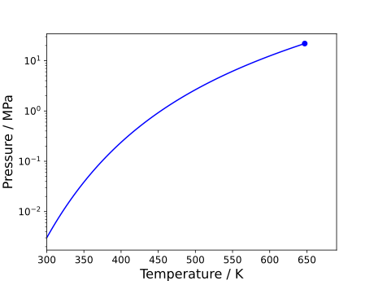
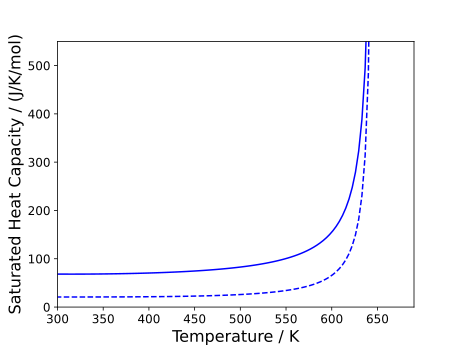

Pure Saturation Properties
Saturation properties are often vital when understanding the global phase behaviour of a pure component. Such properties can be obtained in Clapeyron.jl.
The notebooks associated with this tutorial can be found here.
Saturation curve of water
Let us take the case of obtaining the boiling point of water at atmospheric pressure using Peng–Robinson. This can be obtained using the saturation_temperature(model,p) function as shown below:
julia> model = PR(["water"])
PR{BasicIdeal, PRAlpha, NoTranslation, vdW1fRule} with 1 component:
"water"
Contains parameters: a, b, Tc, Pc, Mw
julia> (Tsat, vl, vv) = saturation_temperature(model, 1e5)
(374.24014010712983, 2.26976016480195e-5, 0.03084938795573781)Note that the outputs of this function are the saturation temperature, saturated liquid volume and saturated vapour volume. The predicted saturation temperature is pretty spot-on for a cubic although the liquid volume is a bit off (see documentation related to model construction to see how cubics can be improved to better model complex systems).
If we wished to do the reverse operation, obtain the saturation pressure at a given temperature, this can be done using the saturation_pressure(model, T) function:
julia> (psat, vl, vv) = saturation_pressure(model,298.15)
(2686.6049469327368, 2.1391026105178707e-5, 0.9223293617932997)In fact, if one wishes to trace the full saturation curve of a component, it is recommended to use this function instead. The primary reason for this is because, as one approaches the critical point, our solvers will become more unstable (just the nature of the critical region). As such, to obtain a smooth curve, it is often best to solve for the saturation conditions far from the critical point first, and then slowly approach the critical point, reusing values from lower temperatures as initial guesses for the next step. Consider an example for-loop below:
N = 100
T = LinRange(298.15, Tc, N)
psat = zeros(N)
vl = zeros(N)
vv = zeros(N)
for i in 1:N
if i==1
sat = saturation_pressure(model, T[i])
psat[i] = sat[1]
vl[i] = sat[2]
vv[i] = sat[3]
v0 = [vl[i],vv[i]]
else
sat = saturation_pressure(model, T[i]; v0=v0)
psat[i] = sat[1]
vl[i] = sat[2]
vv[i] = sat[3]
v0 = [vl[i],vv[i]]
end
endThe resulting $pT$ curve is shown below:

As well as the $\rho T$ envelope:
Using alternative methods
The default methods in Clapeyron.jl are generally intended for speed, with sacrifices to robustness. As such there will probably be a few cases where our default methods fail. While this could be remedied by the user providing their own initial guesses, an alternative would be to use a different method. In the case of the saturation solvers, we have a few alternatives listed elsewhere. This switch can be done as follows:
julia> @time saturation_pressure(model, 298.15)
0.000024 seconds (11 allocations: 432 bytes)
(2686.6049469327368, 2.1391026105178707e-5, 0.9223293617932997)
julia> @time saturation_pressure(model, 298.15, IsoFugacitySaturation())
0.000026 seconds (8 allocations: 480 bytes)
(2686.6049471489205, 2.139102610517806e-5, 0.9223293617190517)
julia> @time saturation_pressure(model, 298.15, SuperAncSaturation())
0.000006 seconds (1 allocation: 32 bytes)
(2686.604947149002, 2.13910261051781e-5, 0.922329361719024)The list of available saturation methods are the following:
ChemPotVSaturation: Default method, solves simultaneously both liquid and vapour volumes as a non linear system of equations. Fastest, but could have some problems too close to the critical point.IsoFugacitySaturation: Solves a univariate Root-finding problem with pressure as main variable. For each iteration calculates a liquid and vapour volume, It is more stable in some cases.CritExtrapolationSaturation: Returns a critical extrapolation approximation of the saturation conditions. Really accurate for $T/T_\mathrm{c} > 0.999$. It is used as initial point for the other saturation methods when a critical point is available.SuperAncSaturation: The method just evaluates a highly regressed Chebyshev polynomial for pressure and saturation volumes, by far the fastest method, but it's only available forvdW,RKandPRequations of state.
By default, Clapeyron.jl only provides superancillaries for the aforementioned cubics. EoSSuperancillaries.jl provides an additional superancillary for the PCSAFT equation of state (without association). In addition to the PCSAFT superancillary, loading the package switches the initial points for the saturation methods to use the superancillaries themselves, resulting in additional speedups. This behaviour can be switched off by setting Clapeyron.SUPERANC_ENABLED[] = false, after loading EoSSuperancillaries.
Critical points
Omitted from the example we gave earlier, one can also solve for the critical point of a pure component in Clapeyron.jl directly. This is done simply using the crit_pure(model) function:
julia> (Tc, pc, vc) = crit_pure(model)
(647.13, 2.19e7, 7.644674198270991e-5)While, in the case of cubics, the critical point is an input, for equations of state such as SAFT, the critical point needs to be determined when trying to trace the saturation region.
Obtaining properties along the saturation curve
Properties such as the enthalpy of vaporisation or saturated heat capacities can be quite important to determine. Ideally, once the saturation pressure and temperature is determined, one should be able to input those values into the bulk property calculators, specifying the respective phases. While this does work generally, this approach begins to fail at conditions approaching the critical point (unsurprisingly). In this case, we recommend using hidden functions in Clapeyron.jl, the Clapeyron.VT_property(model, V, T, n) functions. Rather than taking the pressure as an input, these functions take the system volume. As we have obtained these volumes from the saturation solvers, it ensures that we obtain the property related to the correct phase. This is shown below for the enthalpy of vaporisation saturated heat capacities:
N = 100
T = LinRange(298.15, Tc, N)
psat = zeros(N)
vl = zeros(N)
vv = zeros(N)
hL = zeros(N)
hV = zeros(N)
cpL = zeros(N)
cpV = zeros(N)
for i in 1:N
if i==1
sat = saturation_pressure(model, T[i])
psat[i] = sat[1]
vl[i] = sat[2]
vv[i] = sat[3]
v0 = [vl[i],vv[i]]
else
sat = saturation_pressure(model, T[i]; v0=v0)
psat[i] = sat[1]
vl[i] = sat[2]
vv[i] = sat[3]
v0 = [vl[i],vv[i]]
end
hL[i] = Clapeyron.VT_enthalpy(model,vl[i],T[i],[1.])
hV[i] = Clapeyron.VT_enthalpy(model,vv[i],T[i],[1.])
cpL[i] = Clapeyron.VT_isobaric_heat_capacity(model,vl[i],T[i],[1.])
cpV[i] = Clapeyron.VT_isobaric_heat_capacity(model,vv[i],T[i],[1.])
endThe resulting plots are shown below:
As well as the saturated isobaric heat capacities:
